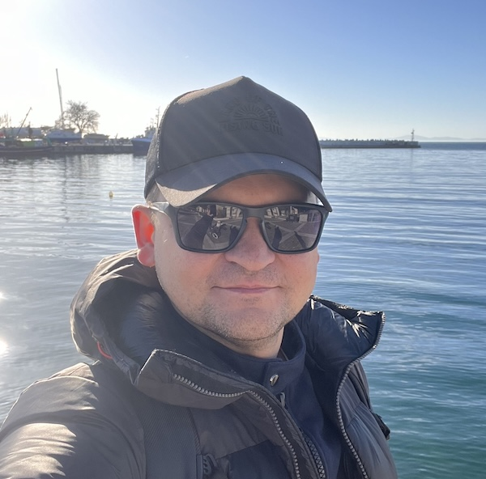

Oleksandr Bodrov
Experienced Senior React Developer with 9 years of dedicated web UI expertise, specializing in React and TypeScript. I've successfully contributed to both enterprise and startup projects, prioritizing client and user satisfaction. My adaptable skills have seen me in roles such as Web UI Developer, Team Lead, DevOps, Full Stack Engineer, and Scrum Master. A collaborative team player, I thrive on effective communication to deliver top-notch products. My passion lies in pushing the limits of React development to consistently enhance project outcomes and user experiences.
🤙 oleksandr.bodrov@icloud.com
Tech Stack
TypeScript, JavaScript
React, Next.js, Node.js
MongoDB, PostgreSQL
MobX, Recoil.js
MUI, Tailwind CSS
AWS Lambda, AWS S3, Docker
Jenkins, GitHub Actions
Jest, RTL, Sonar
Work History
🚧 Senior React Developer/Scrum Master
Almamedia | Tampere, Finland
09/2022 - Present
OviPro Real Estate
- Migration to Featured Sliced Architecture
- Core Feature Design & Implementation
- Project Influencer
- Network optimizations with React-Query
- Managed Team per Scrum methodology
- Contributed to API design
- Developed several CLI tools
- Improved unit tests coverage by 30%
- Worked on FullStack tasks
🚧 Senior React Developer
Inditex | Arteixo, Spain
09/2021 - 09/2022
Corporate Traceability app
- Designing & implementing new features
- Contributed on internal UI library
- Introduced several concepts & solutions
- Worked on company-wide code styling guide
- In-memory storage integration
- Migrated unit tests from Enzyme to RTL
- Collaborated on e2e tests integration (Cypress)
- Hold public Demo of new features
🚧 Fullstack Developer
Bazaarvoice | Austin, TX
08/2014 - 08/2021
Galleries, Social ECommerce Platform
- Team Onboarding Leadership
- Successful Migration to React
- Infrastructure Management
- Cost Reduction Initiatives
- Key Role as Team Lead
- Strategic Decision-Making
- Cross-Functional Collaboration
- Continuous Improvement Advocacy
Education & Contact Information
✴ Bachelor of Engineering. PSACEA, June 2012
✴ Burgas, Bulgaria
✴ Citizenship: Ukraine